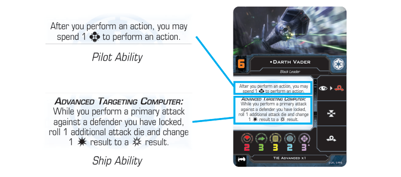

ABILITIES
Some of the text on condition, damage, ship, and upgrade cards describe abilities. These abilities consist of a timing and an effect.
-
Unless a card ability uses the word “may” or has the “Action:” or “Attack:” headers, the ability is mandatory and must be resolved.
-
A ship cannot spend or remove tokens that belong to another ship unless an effect explicitly states otherwise. Similarly, a ship cannot spend, modify, or remove die results that belong to another ship unless an effect explicitly states otherwise.
-
If multiple abilities resolve at the same time, the players use the ability queue to determine the order in which the abilities resolve.
-
A destroyed ship’s abilities remain active until that ship is removed unless the ability specifies a different timing for the effect to end, such as “until the end of the Engagement Phase.” Such effects remain active until the end of the specified time.
Pilot and Ship Abilities
Some ship cards have abilities in addition to or instead of flavor text. All limited ships have unique, personalized pilot abilities instead of flavor text. Some ships have ship abilities on their ship cards listed below their pilot ability or flavor text. Ships of the same ship type all have the same ship ability.

Replacement Effects
Some abilities are substitutive in nature—they replace how an effect would normally resolve. These abilities use the words “would” and “instead.”
-
Replacement effects are not added to the end of the ability queue as they are resolved at the timing of the effect they are replacing.
-
When a replacement effect resolves, the replaced effect is treated as having not occurred.
- For example, Jyn Erso’s ability says “If a friendly ship at range 0–3 would gain a focus token, it may gain 1 evade token instead.” If this ability is used, an effect that triggers after a ship gains a focus token cannot trigger.
-
If there are multiple replacement effects that could substitute for the same effect, only one effect can be substituted for the original effect.
- For example, a ship is about to gain a focus token and has both the ability “Before you would gain a focus token, gain an evade token instead” and the ability “Before you would gain a focus token, gain a calculate token instead.” Only one of those abilities could be resolved.
Paying Costs
A ship can pay a cost for an effect only if the effect can be resolved.
-
For example, GNK “Gonk” Droid’s ability says “Action: Spend 1 to recover 1 shield.” The ship cannot spend the charge if it has no inactive shields.
-
Replacement effects can replace a cost that a ship would pay for an effect. If a cost is replaced in this way, the effect is still resolved.